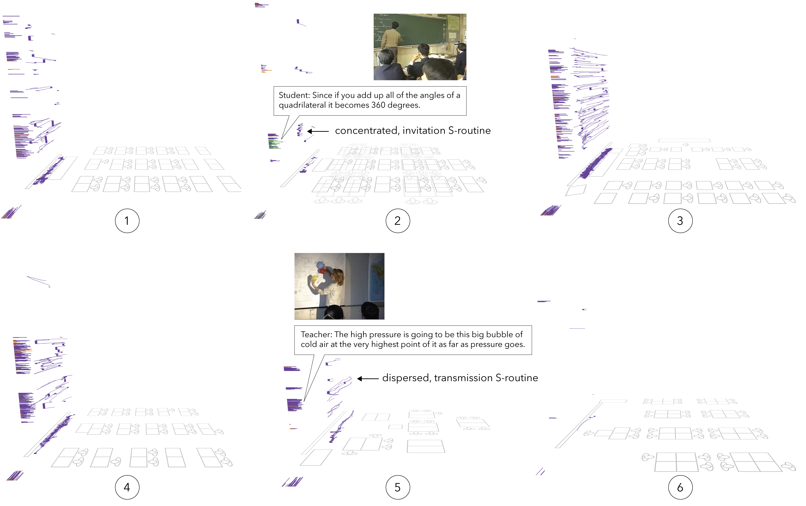

Figure 4. Annotated IGS screenshots showing teacher movement and classroom conversation at the whiteboard during each lesson. Annotations mark S-routines, a material routine teachers use when presenting at the whiteboard that encompasses different qualities including a voicing, spatial distribution, and duration.
